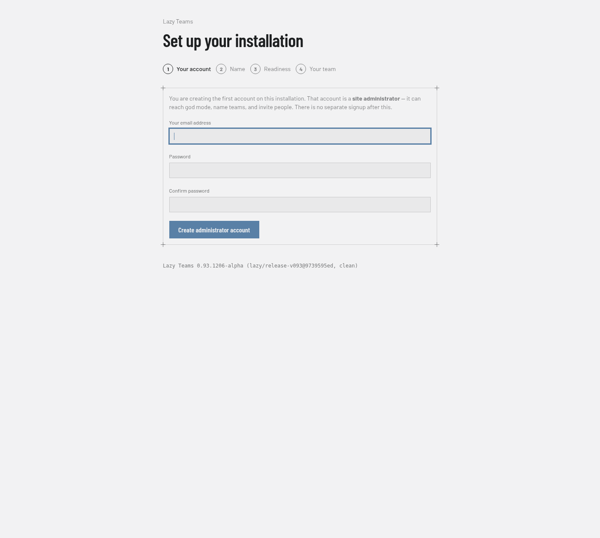
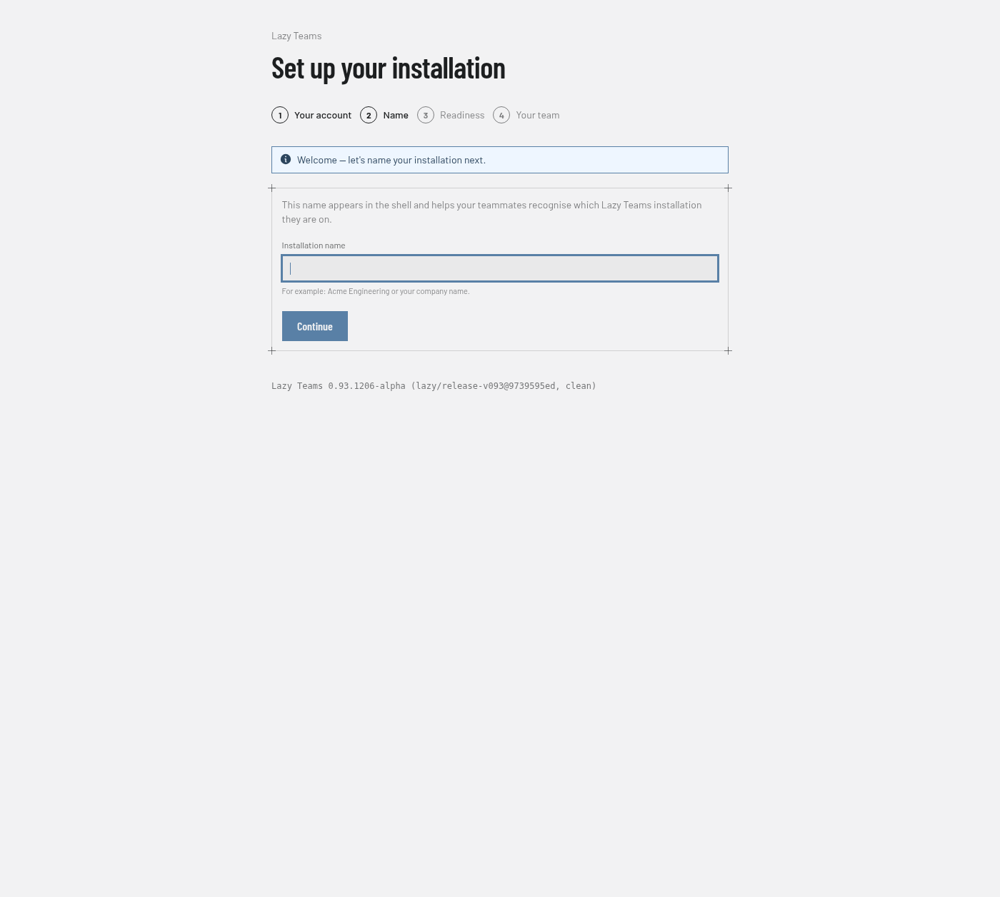
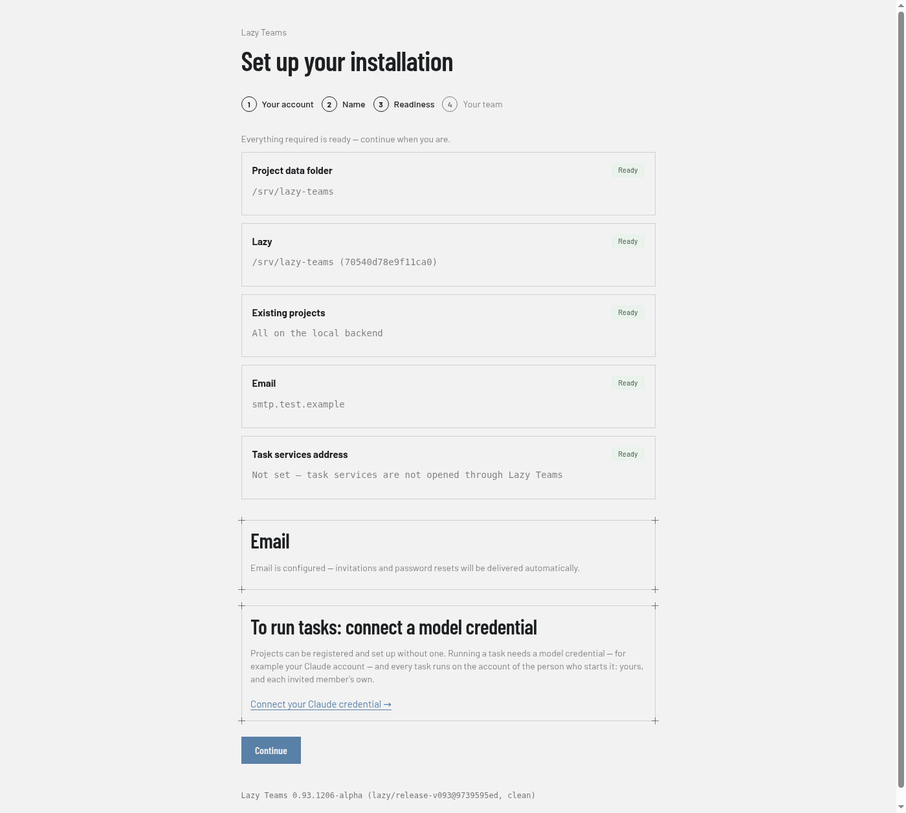
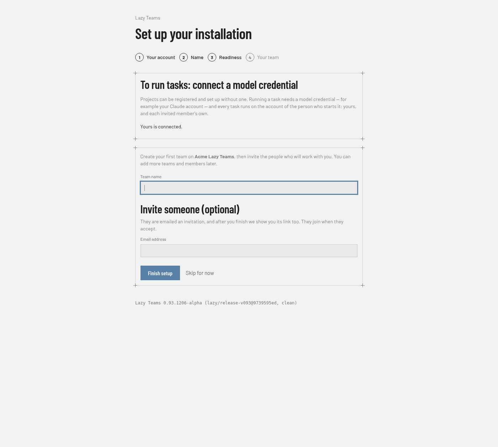

Lazy Teams first-run setup
When you deploy Lazy Teams on a fresh server with an empty database, the app guides you through setup before anyone reaches the normal product. The goal is simple: hoist a server, create your administrator account, and invite your team — without opening a console.
What you see
On first visit, any page redirects into a four-step wizard:
Your account — Create the first sign-in. That account is a site administrator automatically: it can manage the installation, create teams, and invite people. There is no separate signup page after this. Passwords must be at least 12 characters (length only — no special-character rules).

Name — Give the installation a short label (for example your company name). Teammates see it in the page header so they know which Lazy Teams instance they are on.

Readiness — The checks run one at a time so you can see progress:
- Project data folder — where Lazy Teams stores project data on disk. It must exist and be writable by the app process.
- Lazy — a checkout of the lazy CLI on the host, used when projects are provisioned.
- Existing projects — every project already on the install was set up
on the backend the install now runs (see
LAZY_FLEET_BACKENDin Self-hosting Lazy Teams). - Email — outgoing mail is configured, or you choose to continue without it and share invitation links yourself.
- On the default microVM backend, three more: MicroVM host, MicroVM runtime and Project image — see Task turns.

Your team — Create your first team and optionally invite someone. The finish screen shows the invitation link; with email on, it is also emailed to them. They join when they accept.

When you complete step 4, setup is finished and the wizard stops redirecting every request.
Picking up where you left off
Progress is saved as you go:
- Stop after creating your account → next visit resumes at Name.
- Stop after naming → resumes at Readiness.
- Stop after checks → resumes at Your team.
Sign-in works normally once the first account exists. Only an incomplete setup pulls a signed-in administrator back into the wizard.
After setup
The same readiness checklist stays available under God mode → Installation if you later change where project data lives, which lazy checkout is used, or how mail is sent.
Email itself is configured separately under God mode → Email. That page lists which settings are present, how to set them on your host, and lets you send yourself a test message.
What to configure on the host
| Setting | Purpose |
|---|---|
LAZY_FLEET_ROOT |
Directory where project data is stored (optional; a default exists for your OS) |
LAZY_CHECKOUT |
Path to a lazy checkout on the host (optional; the parent of this app is used by default) |
SMTP_ADDRESS, MAILER_FROM, APP_HOST |
Outgoing email (optional at first run; required for automatic invitations and password resets) |
Set these in the environment where the Rails app runs, then restart the app. The readiness step tells you which items still need attention.
Projects run the version of Lazy the app does
On the local backend, Lazy Teams and every project it runs use the same
Lazy, from the checkout above. There is no second version to keep in step.
On the default microVM backend, each project runs the image named by
LAZY_DAEMON_IMAGE, and an upgrade moves existing running projects to the new
version too, automatically and without waiting for them to be idle. A turn that
is running is interrupted and resumes by itself on the new version; a project
whose upgrade fails keeps running on the previous version and is retried with
backoff; after repeated failures Lazy Teams stops retrying and the Installation
page in god mode names the project. See
What an upgrade does for the
full explanation. The rest of this section describes the local backend.
That is kept true automatically. When you upgrade Lazy Teams and restart it, each project restarts on the new version within a minute or so. You do not have to ask for it, and you do not have to wait for anything to finish first: work that was running is picked up again where it left off, with its conversation and its uncommitted changes intact.
If you stop or restart Lazy Teams while a project is still being set up or upgraded, that project is picked up again within a few minutes of Lazy Teams coming back; it does not stay at "being set up" in the meantime. Until a project is on the new version, a page that needs something only the new version has (such as the Run page) says the project is still on an older version and is being updated, rather than showing an error.
The readiness check names the version it found, and the Installation page in god mode shows it alongside any project not yet on it. There is a Restart all project daemons button there for the rare case where you want it now; if a routine restart happens to be in progress it waits its turn rather than being dropped.
A project that repeatedly fails to come back is retried a few times, then left alone rather than restarted every minute. The Installation page lists those separately, so "still catching up" and "stuck, and nothing more is coming" are never confused for one another.
Continuing without email
If you have not configured SMTP yet, choose Continue without email on the readiness step. You can still invite people to teams: Lazy Teams shows you the invitation link to copy and send yourself (by chat, ticket, or any channel you already use).
Configure email later from God mode → Email when you are ready for automatic invitations and password resets.
Inviting people
Adding someone to a team — on the team's Members page — sends them an invitation; it does not add them straight away. Nothing of theirs (membership, credentials) reaches the team until they accept.
- You get an invitation link to hand over. When email is configured it is also emailed to them. The link is shown once; from Members you can make a new one (the old one stops working) or withdraw it.
- Only someone signed in with the invited address — their main address or a verified alternative — can accept or decline. Anyone else who opens the link is refused.
- Someone who already has an account signs in and accepts. Someone new creates their account through the link, choosing their own password. When email is configured they first confirm the address is theirs: Lazy Teams emails it a link, and only that link lets them choose a password. Without email, the link you handed over is enough.
- An account created without that confirmation is asked about its teams after its first password reset: the address's owner sees every team it joined before and can leave any of them.
- An invitation works once and expires after seven days.
No link ever sets the password of an existing account except a password reset, which is only emailed to that account's own address.
Passwords
Every account password — the first administrator, accounts created from an invitation, and password resets — must be at least 12 characters. Lazy Teams checks length only; it does not require symbols, numbers, or mixed case. Existing sessions stay signed in when a password is changed elsewhere.